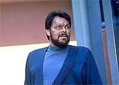
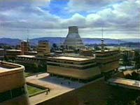
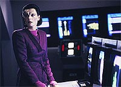
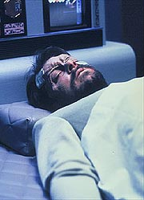

|
MANCHETE
DO EPISDIO
Histria
retrata situao de primeiro
contato como vista pelos aliengenas
Episdio
anterior | Prximo
episdio
Sinopse:
Data Estelar:
desconhecida.
 Uma
misso de reconhecimento no planeta Malcoria III acaba
desastrosamente errada quando o comandante Riker, disfarado como
habitante local, ferido e levado para um hospital Malcoriano. L,
os mdicos locais descobrem sua verdadeira identidade: um aliengena.
Para evitar que um estado de pnico tome por completo o planeta,
Picard e Troi se teletransportam superfcie para encontrar o lder
de Malcoria III, e assim fazer o primeiro contato dos Malcorianos
com seres de outro planeta, j que esses aliengenas estavam
prestes a desenvolver propulso de dobra.
Infelizmente, h pessoas que desaprovam o fim do isolamento de
Malcoria, por ir contra as tradies locais, que dizem que os
Malcorianos so os seres supremos do Universo --de onde Malcoria
seria o centro.
Um dos contrrios ao contato o ministro da Defesa. Ele vai at
onde Riker est hospitalizado e comete suicdio, na tentativa de
incriminar o comandante e destruir os elos diplomticos
estabelecidos por Picard e o lder do planeta.
Embora a tripulao da Enterprise chegue a tempo de salvar Riker
(que estava hospitalizado em estado grave) e o ministro (que foi
atingido por um feiser em tonteio), o governo Malcoriano decide que
seu povo ainda no est pronto para se juntar a uma comunidade
interestelar.
Comentrios:
Em geral, o
sucesso de uma srie de TV depende do quanto o telespectador
consegue se identificar com os personagens principais. O grande mrito
de "First Contact" driblar essa premissa bsica
e ainda assim conservar o carisma adquirido pela srie ao longo dos
anos.
 O
feito dos roteiristas se traduz na estrutura da narrativa, que
toda delineada para mostrar a histria do ponto de vista dos
Malcorianos. No h uma nica cena que no os envolva,
subvertendo de forma maravilhosa um dos pilares mais slidos de uma
srie --o de que os personagens principais so tudo que importa.
Entretanto, vale lembrar que o episdio s funciona porque existe
um paralelo to grande entre nossa civilizao em seu estgio
atual e a dos Malcorianos que podemos nos identificar com aquele
povo, mesmo tendo acabado de conhec-lo.
Alis, o que faz desse episdio um dos melhores segmentos da
temporada justamente essa dualidade: no s temos uma boa histria
sobre os procedimentos da Federao com relao ao primeiro
contato com outra civilizao como tambm temos grandes insights
sobre as reaes que um contato formal com aliengenas poderia
causar na Terra.
 Vrias
situaes especficas do episdio ilustram esse paralelo. Em
certo momento, um dos aliengenas menciona a confuso de alguns
Malcorianos com avistamentos de supostos "bales meteorolgicos".
Mais tarde, uma Malcoriana se prope a ajudar Riker a fugir,
contanto que ele aceite fazer amor com ela. "Eu sempre quis
fazer amor com um aliengena", ela diz, em um dos momentos
mais divertidos do episdio.
E ao final do episdio, o chanceler Durken fala a Picard como
aqueles eventos marcariam a cultura Malcoriana, gerando mitos sobre
"conspiraes governamentais". Nada poderia ser mais
terrestre.
interessante notar a mensagem passada pelos roteiristas. Por meio
de todos esses paralelos, eles acabam sugerindo que a mesmssima
coisa possa ter acontecido na Terra e gerado esses mesmos efeitos
colaterais. No surpreende que um dos roteiristas --o consagrado
Ronald D. Moore-- tenha sido convocado para trabalhar na srie
"Roswell"...
 O
ponto negativo do episdio a velha reciclagem de planetas. Na Srie
Clssica era at aceitvel, pelo baixo oramento e a
tecnologia precria, mas com a Nova Gerao pedir
demais. entediante descobrir que uma cidade de Malcoria
exatamente igual uma de Angel I, planeta visto em "Angel
One", da primeira temporada da srie. Alis, essa
uma das vises panormicas mais reciclada de Jornada nas
Estrelas, tendo aparecido tambm durante a primeira temporada
de Voyager.
Incomoda um pouco tambm a forma pela qual Troi e Picard apareceram
para Mirasta no primeiro contato, uma cena que colocou os dois como
entidades quase que santificadas. Por outro lado, se algo assim
acontecesse na Terra, provavelmente a sensao seria a mesma,
mostrando mais uma vez o alto grau de sensibilidade e preciso da
equipe de produo ao preparar a sequncia.
Citaes:
Riker - "It is
far more likely that I am a weather-balloon than an alien."
(" muito mais provvel que eu seja um balo meteorolgico
do que um aliengena.")
Durken - "I will have to say that this morning I was the
leader of the universe as I knew it. This afternoon, I am only a
voice in a chorus. But I think it was a good day."
("Eu terei de dizer que esta manh eu era o lder do Universo
como eu o conhecia. Esta tarde, sou apenas uma voz em um coral. Mas
acho que foi um bom dia.")
Riker - "Now, will you help me?"
("Agora, voc vai me ajudar?")
Lanel - "If you make love to me."
("Se voc fizer amor comigo.")
Riker - "What?"
("O qu?")
Lanel - "I always wanted to make love with an alien."
("Eu sempre quis fazer amor com um aliengena.")
Trivia:
 Bebe Neuwirth, mais conhecida por
atuar no famoso sitcom "Cheers" (exibido no Brasil pelo
canal pago Sony) faz uma ponta neste episdio como uma enfermeira
Malcoriana de nome Lanel. Neuwirth uma grande f de Jornada,
e pediu aos produtores uma pontinha em algum episdio.
Bebe Neuwirth, mais conhecida por
atuar no famoso sitcom "Cheers" (exibido no Brasil pelo
canal pago Sony) faz uma ponta neste episdio como uma enfermeira
Malcoriana de nome Lanel. Neuwirth uma grande f de Jornada,
e pediu aos produtores uma pontinha em algum episdio.
Carolyn
Seymour, que interpretou a Romulana sub-comandante Taris no episdio
"Contagion", reaparece
aqui como a Ministra da Cincia de Malcorian III, Mirasta.
Neste
episdio citado que um primeiro contato muito mal-sucedido foi a
razo por trs de anos de conflitos entre os Klingons e a Federao.
Ficha
tcnica:
Histria de Marc Scott
Zicree
Roteiro de Dennis Russell Bailey, David Bischoff, Joe
Menosky e Ronald D. Moore
Direo de Cliff Bole
Exibido em 18/02/1991
Produo: 089
Elenco:
Patrick Stewart como
Jean-Luc Picard
Jonathan Frakes como William Thomas Riker
Brent Spiner como Data
LeVar Burton como Geordi La Forge
Michael Dorn como Worf
Gates McFadden como Beverly Crusher
Marina Sirtis como Deanna Troi
Elenco convidado:
George Coe
como chanceler Avill Durken
Carolyn Seymour como Mirasta
George Hearn como Berel
Michael Ensign como Krola
Steven Anderson como Nilrem
Sachi Parker como dr. Tava
Bebe Neuwirth como enfermeira Lanel
Episdio
anterior | Prximo
episdio
|